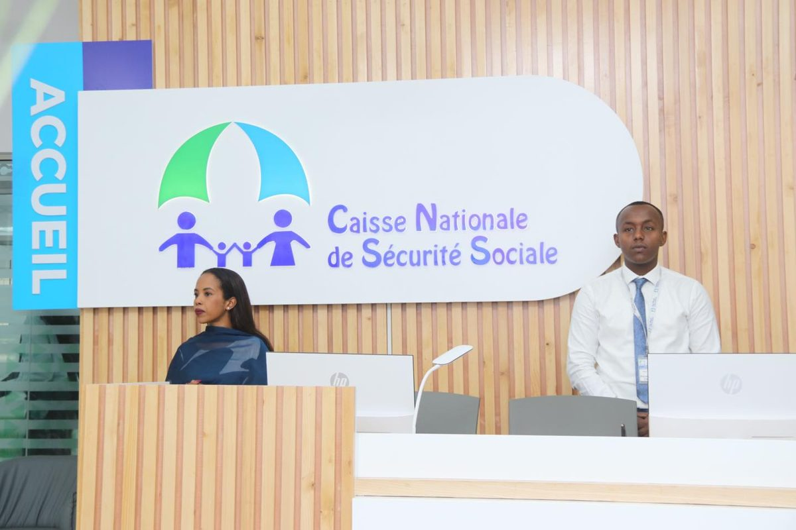
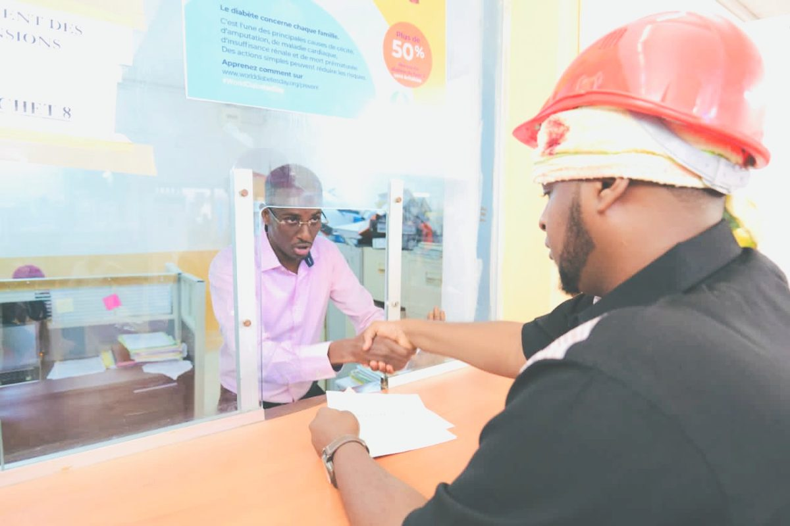
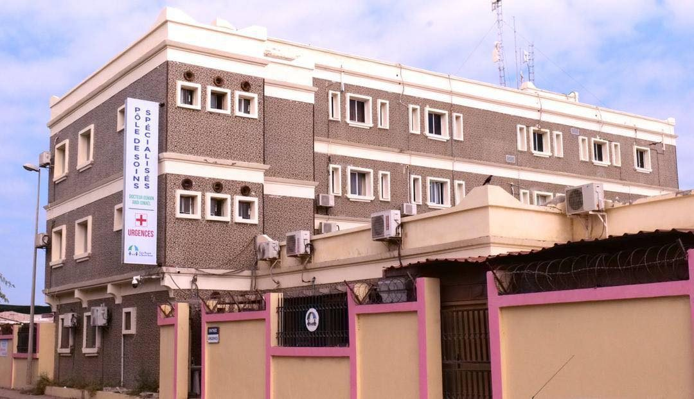
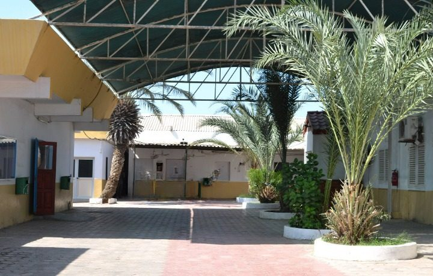
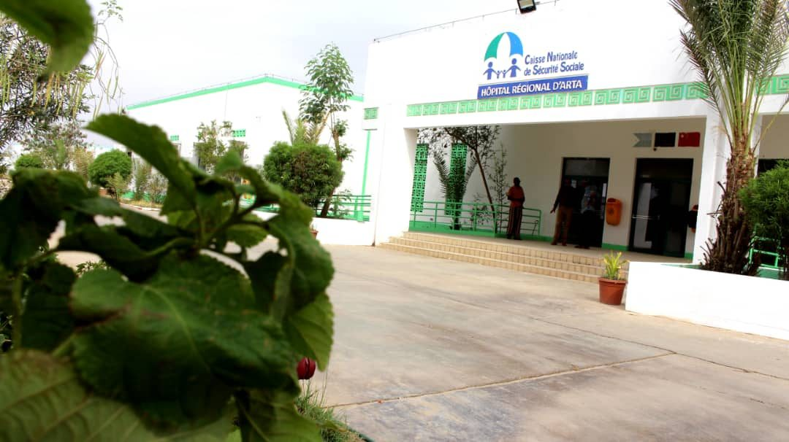
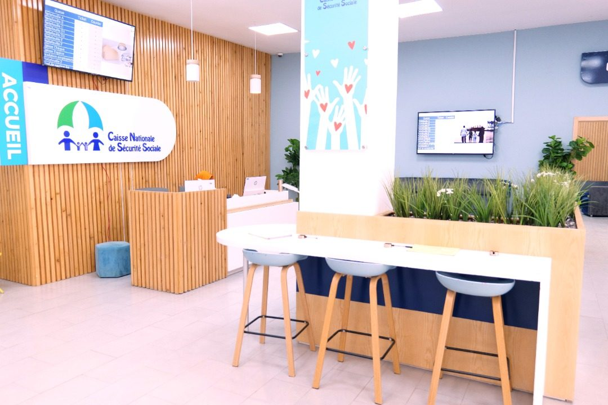
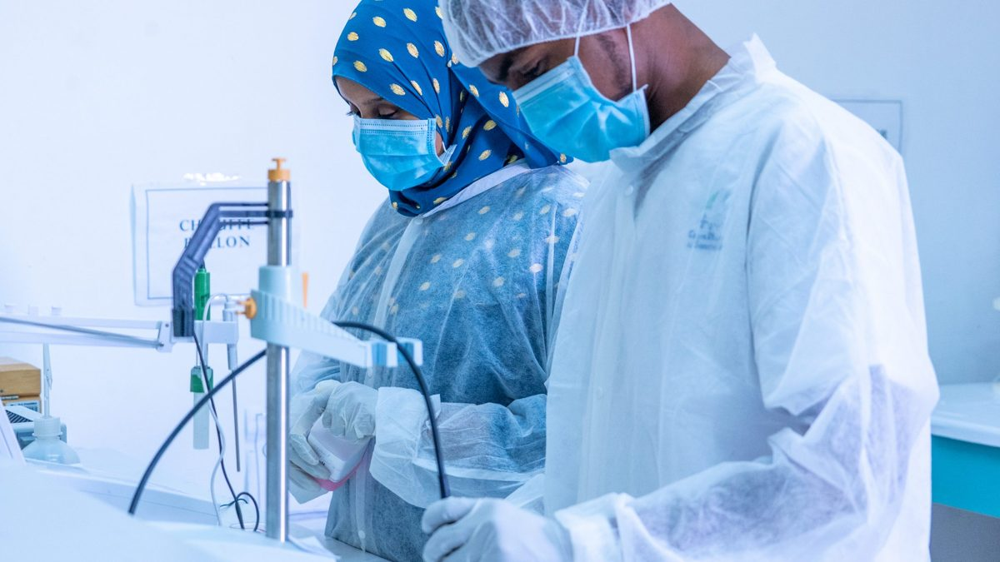

3 ansACTU
VAMED et La CNSS s'associent pour un partenariat stratégique
Posted by webmaster
Nouveauté : Assistant CNSS en ligne — posez vos questions 24h/24
Bienvenue sur le site web de l'institution en charge de la gestion de la sécurité sociale en République de Djibouti


CNSS Assurance d'une meilleure Protection.
La CNSS est là pour vous accompagner tout au long de votre vie
Nouveau service
L'assistant répond en langage simple à partir de la documentation officielle de la CNSS : conditions, pièces à fournir, démarches. Chaque réponse cite sa source.
Aussi disponible : page dédiée · application mobile CNSS
Questions fréquentes
Nos structures
Le Centre de Soins 1, plus connu sous son ancienne appellation SMI, a été construit en 1972 pour assurer des prestations de soins aux salariés affiliés à la Caisse des Prestations Sociales (CPS).
En savoir plus ›
Connu sous son ancienne appellation SMI 2, le Centre de soins 2 est sis au quartier 6. Cette structure qui a vu le jour en 1974 accueille les familles ou les ayants droit du principal assuré.
En savoir plus ›
Service d'urgence performant, le Pôle de soins Spécialisés (PSS) a été inauguré le 20 février 2016 par le Président de la République SEM Ismaïl Omar Guelleh.
En savoir plus ›
Cet hôpital inauguré le 18 octobre 2012 par le Président de la République a été rétrocédé à la CNSS en 2015 afin qu'elle procède à son opérationnalisation. L'objectif : un hôpital régional spécialisé dans les chirurgies de courte durée.
En savoir plus ›
Créé en 2005, Djibpharma est le premier laboratoire pharmaceutique djiboutien de production des solutés et injectables médicaux. Cette unité est sous tutelle de la CNSS.
En savoir plus ›
En 2015, la CNSS a, dans le cadre de l'Assurance Maladie Universelle, signé des conventions avec l'hôpital Peltier, l'hôpital de Balbala et la maternité de Dar-el-Hanan, et renouvelé en 2016 sa convention avec le complexe hospitalier d'Al-Rahma.
En savoir plus ›L'Assurance Maladie Universelle (AMU) est l'une des plus ambitieuses réformes de la politique sociale. Elle assure une couverture médicale de base à toute la population vivant en République de Djibouti.
L'AMO est un régime obligatoire pour toute personne active. Avec l'AMO, cotisez pour vos soins mais offrez aussi une couverture médicale à votre famille.
Le PASS est le volet solidaire de l'AMU : un régime subventionné qui couvre les personnes identifiées comme n'ayant « aucun revenu ».
Lancé à la rentrée 2016-2017, ce régime obligatoire est dédié aux étudiants de moins de 35 ans en formation initiale à l'Université de Djibouti.